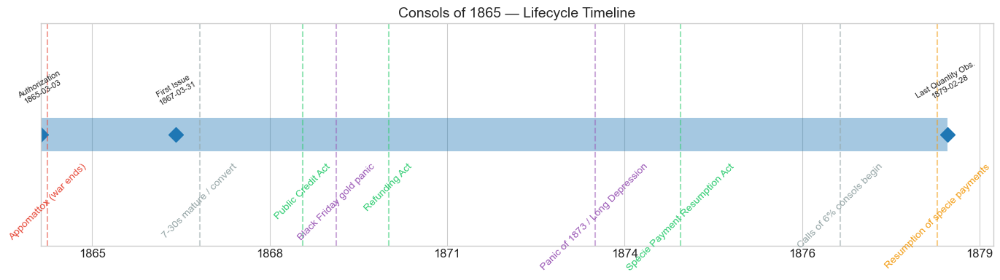
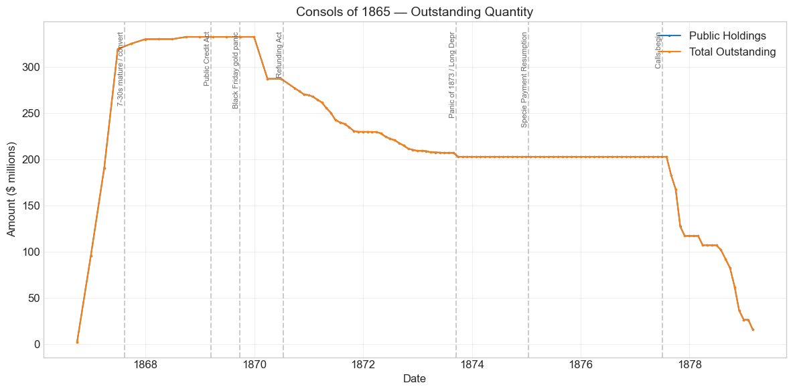
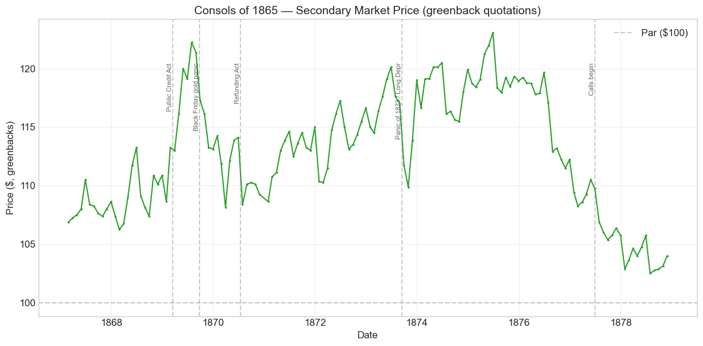
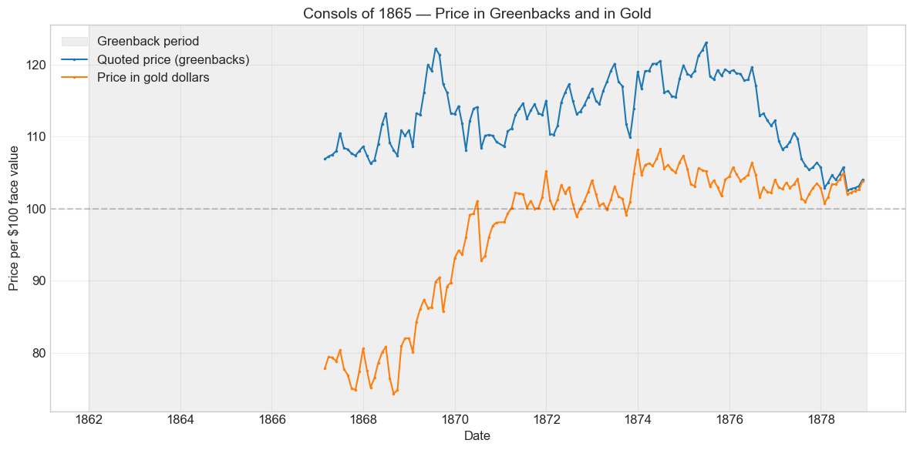
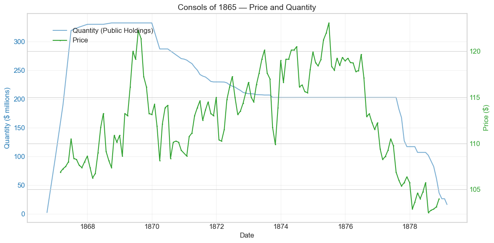
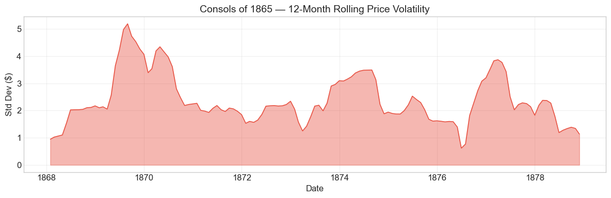

Bond Biography: Consols of 1865#
Funding the Peace: The Great Consolidation of the War Debt#
Enhanced from the Hall-Payne-Sargent US Federal Bond Database (2,857 issues, 1776–1960)
Bond ID (L1): 20114 Category: Interest Bearing > Marketable > Long Term Bond Coupon: 6% semi-annual, payable in coin Term: 5-year call / 20-year maturity (“five-twenty”) Authorization: Act of March 3, 1865
The Consols of 1865 were the first great act of postwar housekeeping: the funding of a floating mountain of short-term war paper into long bonds — and, a decade later, the first bonds called home when the Treasury refinanced the war debt at lower rates.
Data note. Quotations from the start of the series to December 1878 are prices in greenbacks, while the coupons of these bonds (and, after the Public Credit Act of 18 March 1869, their principal) were payable in coin. Price movements before resumption therefore mix the gold premium with credit news.
import pandas as pd
import numpy as np
import matplotlib.pyplot as plt
import matplotlib.patches as mpatches
import datetime
import warnings
warnings.filterwarnings('ignore')
plt.style.use('seaborn-v0_8-whitegrid')
plt.rcParams.update({'figure.figsize': (12, 6), 'font.size': 12,
'axes.titlesize': 14, 'axes.labelsize': 12})
# Load the bond database
store = pd.HDFStore('../data/BondDF.h5', mode='r')
BondList = store['BondList']
BondQuant = store['BondQuant']
BondPrice = store['BondPrice']
store.close()
BondQuant_T = BondQuant.transpose()
BondPrice_T = BondPrice.transpose()
bond_id = 20114
print(f'Loaded data for: Consols of 1865 (ID: 20114)')
/Users/thomassargent/anaconda3/lib/python3.9/site-packages/pandas/core/arrays/masked.py:60: UserWarning: Pandas requires version '1.3.6' or newer of 'bottleneck' (version '1.3.5' currently installed).
from pandas.core import (
Loaded data for: Consols of 1865 (ID: 20114)
Overview#
The Consols of 1865 — formally, six per cent five-twenty bonds issued under the Act of March 3, 1865 — occupy a pivotal place in the arc of Civil War finance. The database records 141 monthly price observations from February 1867 to November 1878, with an average greenback price of $112.80 (range $102.50–$123.07), and a peak outstanding quantity of $332.5 million on September 30, 1868. Those numbers made this issue, together with its sister series of 1867 and 1868 under the same act, part of the largest funded loan operation of the era.
From Seven-Thirties to Consols: Funding the Floating Debt#
When Congress passed the Act of March 3, 1865, the Civil War had one month left to run, but the war’s financial reckoning was only beginning. The Union had fought its final campaigns substantially on short-term paper. The 7-30 Treasury notes — three-year notes bearing 7.3 percent interest — had been poured out in three enormous series in 1864 and 1865. The last and largest waves were sold by Jay Cooke’s second great popular campaign: after his triumph with the Five-Twenties of 1862, Cooke was re-engaged as general subscription agent in early 1865 and moved the 7-30s to the public at a pace that at times exceeded even his wartime records, deploying his network of traveling agents, newspaper publicity, and small denominations aimed at ordinary savers. In total, roughly $830 million of 7-30 notes were placed — a floating mass of high-interest, short-dated debt that would come due in 1867 and 1868.
The Act of March 3, 1865 (with its 1866 continuation) was Congress’s answer. It authorized the Treasury to borrow on long bonds and — crucially — to receive Treasury notes in exchange for them. Each 7-30 note carried the privilege of conversion at maturity, at the holder’s option, into 6 percent five-twenty bonds — gold-interest bonds callable after five years and payable in twenty. The bonds issued in these conversions and sales became known as the Consols (“consolidated” loans) of 1865, 1867, and 1868, named for their years of issue. The name deliberately echoed the British consols: these were to be the permanent, funded core of the national debt.
What makes this bond’s story distinctive is its position as a bridge. Where the Five-Twenties of 1862 (see the companion chapter, Bond 20101) tell the story of desperate wartime origination, the Consols of 1865 tell the story of postwar consolidation: the transformation of a chaotic floating debt into orderly long bonds, the fight to establish that those bonds would be paid in gold, and finally — because their 6 percent coupon was the most expensive of the funded debt — their fate as the first target of the great refunding under the Act of July 14, 1870, when Treasury Secretaries Boutwell and Sherman replaced them with 5s, 4½s, and 4s. The companion chapters on the 1867 and 1868 series and on the Four Per Cents of 1907 (Bond 20121) carry the later parts of that story.
Historical Context#
The following major events occurred during this bond’s lifetime:
Date |
Event |
Category |
|---|---|---|
1865-04-09 |
Lee surrenders at Appomattox; war ends |
War |
1865-08-31 |
Federal debt reaches its Civil War peak (~$2.8 billion) |
Fiscal |
1867–1868 |
7-30 Treasury notes mature and convert into consols |
Fiscal |
1869-03-18 |
Public Credit Act |
Legislation |
1869-05-10 |
Transcontinental Railroad completed |
Other |
1869-09-24 |
Black Friday gold panic |
Crisis |
1870-07-14 |
Refunding Act (amended January 20, 1871) |
Legislation |
1873-09-18 to 1879-03-01 |
Panic of 1873 / Long Depression |
Crisis |
1875-01-14 |
Specie Payment Resumption Act |
Legislation |
1877–1879 |
Six per cent five-twenties called and refunded into 4½s and 4s |
Fiscal |
1879-01-01 |
Resumption of specie payments |
Monetary |
Reading the prices: greenback quotations#
A caution that applies to every Civil War-era bond in this database, and which the Five-Twenties chapter develops at length: through the end of 1878, market quotations are in greenbacks, while the bond’s coupons (and, after 1869, unambiguously its principal) were payable in gold coin. A greenback price of 110 therefore conflates two things: the bond’s value as a claim on gold, and the depreciation of the greenback itself. In 1867, with gold still commanding a substantial premium over paper, a consol quoted in the high 100s was actually worth less than par in gold. As the greenback appreciated toward parity — achieved with resumption on January 1, 1879 — the greenback quotation and the gold value of the bond converged. Much of the price history below is the slow squeezing-out of that currency wedge.
The Public Credit Act and the “honest money” appreciation#
The consols were sold with the same ambiguity that haunted the Five-Twenties of 1862: coupons were explicitly payable in coin, but the medium for repaying principal was contested, and the Pendleton Plan of 1868 proposed paying the five-twenties in greenbacks. The Public Credit Act of March 18, 1869 — the first law President Grant signed — pledged the faith of the United States to payment of its coupon obligations “in coin or its equivalent.” For holders of the consols this was a windfall made law: the database shows the greenback price climbing from about $108.6 in January 1869 to over $122 by July 1869 as the gold pledge, together with a declining gold premium, lifted the bonds.
Black Friday, September 24, 1869#
When Jay Gould and James Fisk attempted to corner the gold market, the collapse of their corner on “Black Friday” convulsed every market tied to the gold–greenback exchange rate. The consols, quoted in greenbacks but promising gold, slid from about $121.4 in August 1869 to $113.2 by November — a decline of roughly 7 percent over three months as the gold premium gyrated and leveraged holders liquidated. The move was a currency event, not a credit event: nobody doubted the Treasury would pay.
The Panic of 1873 and the Long Depression#
The failure of Jay Cooke & Co. in September 1873 — the same house that had sold the 7-30s from which these consols sprang — triggered a general panic. The consols dipped from $120.1 in June 1873 to $109.9 in October as holders sold liquid assets to raise cash. But the recovery was swift: by December 1873 the price was back near $119, and the bonds went on to their all-time greenback peak of $123.07 in June 1875. In the deflationary Long Depression, a gold-interest 6 percent government bond was precisely what frightened capital wanted. The later price decline — down toward par by 1878 — reflects not distress but the approach of the call: a callable bond redeemable at par cannot sustain a large premium once redemption becomes imminent.
# Bond Lifecycle Timeline
fig, ax = plt.subplots(figsize=(14, 4))
# Key dates
dates = [('Authorization', '1865-03-03'), ('First Issue', '1867-03-31'), ('Last Quantity Obs.', '1879-02-28')]
events = [('Appomattox (war ends)', '1865-04-09', 'war'),
('7-30s mature / convert', '1867-08-15', 'other'),
('Public Credit Act', '1869-03-18', 'legislation'),
('Black Friday gold panic', '1869-09-24', 'crisis'),
('Refunding Act', '1870-07-14', 'legislation'),
('Panic of 1873 / Long Depression', '1873-09-18', 'crisis'),
('Specie Payment Resumption Act', '1875-01-14', 'legislation'),
('Calls of 6% consols begin', '1877-07-01', 'other'),
('Resumption of specie payments', '1879-01-01', 'monetary')]
import matplotlib.dates as mdates
from datetime import datetime
# Plot bond lifetime bar
d0 = datetime.strptime(dates[0][1], '%Y-%m-%d')
d1 = datetime.strptime(dates[-1][1], '%Y-%m-%d')
ax.barh(0, (d1 - d0).days, left=mdates.date2num(d0), height=0.3,
color='#1f77b4', alpha=0.4, label='Bond Lifetime')
# Mark key dates
for label, date_str in dates:
d = datetime.strptime(date_str, '%Y-%m-%d')
ax.plot(mdates.date2num(d), 0, 'D', color='#1f77b4', markersize=10)
ax.annotate(f'{label}\n{date_str}', (mdates.date2num(d), 0.25),
ha='center', va='bottom', fontsize=8, rotation=30)
# Mark historical events
colors = {'war': '#e74c3c', 'crisis': '#9b59b6', 'legislation': '#2ecc71', 'other': '#95a5a6', 'monetary': '#f39c12'}
for name, date_str, cat in events:
d = datetime.strptime(date_str, '%Y-%m-%d')
ax.axvline(mdates.date2num(d), color=colors.get(cat, 'gray'), alpha=0.5, linestyle='--')
ax.annotate(name, (mdates.date2num(d), -0.25), ha='center', va='top',
fontsize=10, rotation=45, color=colors.get(cat, 'gray'))
ax.set_yticks([])
ax.xaxis.set_major_formatter(mdates.DateFormatter('%Y'))
ax.set_title('Consols of 1865 — Lifecycle Timeline')
ax.set_ylim(-1, 1)
plt.tight_layout()
plt.show()

Bond Features#
Feature |
Detail |
|---|---|
Name |
Consols of 1865 |
Authorizing Act |
March 3, 1865 |
Authorization Date |
March 3, 1865 |
First Issue Date (database) |
March 31, 1867 |
Term |
5 or 20 years (five-twenty) |
Coupon Rate |
6.0%, payable in coin |
Payment Frequency |
Semi-annual |
Callable |
Yes (after 5 years, at par) |
Payable in Coin |
Yes (coupons; principal confirmed by Public Credit Act of 1869) |
Price Sold (database) |
1.03601 (~$103.60 per $100, in greenbacks) |
Peak Outstanding |
$332.5 million (September 30, 1868) |
Disposition |
Called and refunded into 4½s and 4s, 1877–1879 |
Two features deserve comment. First, the five-twenty structure — callable at par after five years, payable at twenty — was inherited directly from the Five-Twenties of 1862 and proved decisive for this bond’s fate: the call option is what allowed the Treasury to retire the entire issue in the late 1870s the moment it could borrow more cheaply. Second, the database’s issue price above par is a greenback figure; measured in gold, subscribers and converting note-holders were acquiring the bonds at a discount to their coin face value. Note also that the database’s quantity series begins in September 1866, a few months before its recorded “first issue date” of March 1867 — conversions and issues under the act ramped up across that boundary.
# Display full bond features from database
row = BondList.loc[20114]
display_cols = [
"Treasury's Name Of Issue", 'Authorizing Act', 'Term Of Loan',
'First Issue Date', 'First Redemption Date', 'Final Redemption Date',
'Coupon Rate', 'Coupons Per Year', 'Callable', 'Coin',
'Authorized Amount', 'Price Sold'
]
print('Bond Features from Database:')
print('=' * 55)
for col in display_cols:
if col in row.index:
print(f' {col:<30} {row[col]}')
Bond Features from Database:
=======================================================
Treasury's Name Of Issue Consols of 1865
Authorizing Act March 3, 1865
Term Of Loan 5 or 20 yrs
First Issue Date 1867-03-31 00:00:00
First Redemption Date NaT
Final Redemption Date NaT
Coupon Rate 6.0
Coupons Per Year 2.0
Callable 1.0
Coin 2.0
Authorized Amount nan
Price Sold 1.03601
Bond Quantity Over Time#
The bond’s outstanding quantity peaked at $332.5 million on September 30, 1868. The data span from September 1866 to February 1879 (118 monthly observations), and the shape of the curve tells the whole life story in one glance: a nearly vertical ramp in 1866–67 as the 7-30 notes converted, a plateau through the late 1860s, a stepped decline in 1870–73 as the first refunding operations bit, a second plateau through the mid-1870s, and a rapid run to extinction in 1877–79 when the Treasury called the bonds.
# Bond quantity over time
fig, ax = plt.subplots(figsize=(12, 6))
for stype in ['Public Holdings', 'Total Outstanding']:
try:
s = BondQuant_T.loc[(20114, stype)]
s = s[s.notna()]
if len(s) > 0:
ax.plot(s.index, s.values / 1e6, marker='.', markersize=3, linewidth=1.5, label=stype)
except KeyError:
pass
ax.set_title('Consols of 1865 — Outstanding Quantity')
ax.set_xlabel('Date')
ax.set_ylabel('Amount ($ millions)')
ax.legend()
ax.grid(True, alpha=0.3)
events = {'1867-08-15': '7-30s mature / convert',
'1869-03-18': 'Public Credit Act',
'1869-09-24': 'Black Friday gold panic',
'1870-07-14': 'Refunding Act',
'1873-09-18': 'Panic of 1873 / Long Depr',
'1875-01-14': 'Specie Payment Resumption',
'1877-07-01': 'Calls begin'}
for date_str, label in events.items():
d = pd.Timestamp(date_str)
ax.axvline(d, color='gray', alpha=0.4, linestyle='--')
ax.text(d, ax.get_ylim()[1]*0.97, label, rotation=90, va='top', ha='right', fontsize=8, alpha=0.7)
plt.tight_layout()
plt.show()

Quantity Analysis: Conversion, Plateau, Refunding, Extinction#
Phase 1 — The conversion ramp (1866–1868). The series opens at a mere $2.0 million in September 1866, jumps to $95.2 million by December 1866, $190.4 million by March 1867, and $319.4 million by June 1867, reaching its plateau near $330 million by the end of that year (peak $332.5 million in September 1868). This near-vertical ramp is the 7-30 conversion machine at work: as the wartime 7-30 notes approached and reached maturity — the first great series fell due on August 15, 1867 — their holders overwhelmingly exercised the option to exchange them for these 6 percent five-twenty consols rather than take cash the Treasury did not have. Very little of this bond was “sold” in the ordinary sense; it was predominantly swapped into existence, note for bond. The postwar debt had peaked around $2.8 billion in August 1865, much of it short-dated; operations like this one converted the floating debt into a funded one without the Treasury raising a dollar of new money.
Phase 2 — The plateau (1868–1870). From late 1867 through 1870 the quantity is essentially flat at $330–333 million. The consolidation was complete; the political fight over gold versus greenback redemption (settled by the Public Credit Act in March 1869) played out over an unchanging stock of bonds.
Phase 3 — The first refunding wave (1870–1873). The Refunding Act of July 14, 1870 (amended January 20, 1871) authorized new 5 percent, 4½ percent, and 4 percent bonds expressly to replace the 6 percent war debt, and empowered the Treasury to redeem the five-twenties at par. Because the 6 percent consols were the government’s most expensive funded debt, they stood first in line. Secretary Boutwell’s early refunding sales and the Treasury’s surplus-revenue purchases show up clearly in the data: outstanding falls from $332.5 million at the end of 1869 to $269.5 million (end 1870), $229.7 million (1871), $209.1 million (1872), and about $202.7 million by the end of 1873.
Phase 4 — The depression pause (1873–1877). The quantity then sits almost motionless at $202.6–202.7 million for nearly four years. The Panic of 1873 and the ensuing depression stalled the refunding: new bond sales were difficult, and the Treasury’s surplus shrank. The consols simply waited.
Phase 5 — Called home (1877–1879). When Sherman’s refunding machinery hit full stride — the 4½s of 1891 from 1876 and above all the Four Per Cents of 1907 from 1877 (see the companion chapter, Bond 20121) — the 6 percent consols were called at par in rapid tranches. The database shows the wind-down month by month: $202.6 million in July 1877, $116.9 million by November 1877, $101.8 million in July 1878, $36.2 million in November 1878, and a residual $16.0 million at the final observation in February 1879, on the eve of and just after specie resumption. Price quotations cease in November 1878, when the shrinking remnant stopped trading actively. The proceeds of the new 4 percent loan retired them; the war’s 6 percent debt was, for this series, effectively extinguished by early 1879.
Secondary Market Prices#
Overall Statistics (1867-02-28 to 1878-11-30): Mean $112.80, Range $102.50–$123.07, Std Dev $5.11, 141 observations. All quotations through 1878 are greenback prices.
By Period:
Period |
Mean |
Std |
Min |
Max |
Obs |
|---|---|---|---|---|---|
Start to Issue (1867-02 to 1867-03) |
$107.06 |
$0.27 |
$106.88 |
$107.25 |
2 |
Issue to End (1867-03 to 1878-11) |
$112.85 |
$5.11 |
$102.50 |
$123.07 |
140 |
The price history divides naturally into three movements. First, a rise from the mid-100s to the low 120s (1867–1869), powered by the Public Credit Act’s gold pledge and the appreciating greenback — the “honest money” rally. Second, a high plateau (1870–1875) in the 108–123 range, punctured briefly by Black Friday (1869), the summer of 1870, and the Panic of 1873, and crowned by the all-time peak of $123.07 in June 1875 as depression-era yields fell. Third, a glide back toward par (1875–1878): with the Refunding Act’s machinery advancing and calls at par first probable and then actual, the premium a rational buyer would pay above 100 shrank steadily — the classic “pull to call” of a callable bond, ending at $104.00 in the final quotation of November 1878.
# Annotated price chart
fig, ax = plt.subplots(figsize=(12, 6))
s = BondPrice_T.loc[(20114, 'Average')]
s = pd.to_numeric(s, errors='coerce').dropna()
if len(s) > 0:
ax.plot(s.index, s.values, marker='.', markersize=3, linewidth=1.5, color='#2ca02c')
ax.axhline(100, color='black', alpha=0.2, linestyle='--', label='Par ($100)')
ax.set_title('Consols of 1865 — Secondary Market Price (greenback quotations)')
ax.set_xlabel('Date')
ax.set_ylabel('Price ($, greenbacks)')
ax.legend()
ax.grid(True, alpha=0.3)
events = {'1869-03-18': 'Public Credit Act',
'1869-09-24': 'Black Friday gold panic',
'1870-07-14': 'Refunding Act',
'1873-09-18': 'Panic of 1873 / Long Depr',
'1877-07-01': 'Calls begin'}
for date_str, label in events.items():
d = pd.Timestamp(date_str)
ax.axvline(d, color='gray', alpha=0.4, linestyle='--')
ax.text(d, ax.get_ylim()[1]*0.97, label, rotation=90, va='top', ha='right', fontsize=8, alpha=0.7)
plt.tight_layout()
plt.show()

Prices in greenbacks and in gold#
From January 1862 to December 1878 the database quotes this bond in greenbacks, while its coupons were paid in coin. A greenback price therefore moves with the gold premium as well as with the bond’s credit. The chart below divides each greenback price by the greenback price of $100 in gold, which restates the quotation in gold dollars. Before 1862 and after 1878 the two units coincide.
# Price in greenbacks and in gold units, 1860-1880
gold = pd.read_csv('../data/gold_price_greenbacks_1862_1878.csv', comment='#', parse_dates=['date']).set_index('date')['gold_price_greenbacks']
p = pd.to_numeric(BondPrice_T.loc[(20114, 'Average')], errors='coerce').dropna()
p = p.loc['1860-01-01':'1880-12-31']
g = gold.reindex(p.index)
g[(p.index < pd.Timestamp('1862-01-01')) | (p.index > pd.Timestamp('1878-12-31'))] = 100.0
p_gold = p / (g / 100.0)
fig, ax = plt.subplots(figsize=(12, 6))
ax.axvspan(pd.Timestamp('1862-01-01'), pd.Timestamp('1878-12-31'), color='gray', alpha=0.12, label='Greenback period')
ax.plot(p.index, p.values, marker='.', markersize=3, linewidth=1.5, label='Quoted price (greenbacks)')
ax.plot(p_gold.index, p_gold.values, marker='.', markersize=3, linewidth=1.5, label='Price in gold dollars')
ax.axhline(100, color='black', alpha=0.2, linestyle='--')
ax.set_title('Consols of 1865 — Price in Greenbacks and in Gold')
ax.set_xlabel('Date')
ax.set_ylabel('Price per \\$100 face value')
ax.legend()
ax.grid(True, alpha=0.3)
plt.tight_layout()
plt.show()

# Price and Quantity — dual-axis chart
fig, ax1 = plt.subplots(figsize=(12, 6))
# Quantity (left axis)
for stype in ['Public Holdings', 'Total Outstanding']:
try:
q = BondQuant_T.loc[(20114, stype)]
q = q[q.notna()]
if len(q) > 0:
ax1.plot(q.index, q.values / 1e6, color='#1f77b4', alpha=0.6, label=f'Quantity ({stype})')
break
except KeyError:
pass
ax1.set_xlabel('Date')
ax1.set_ylabel('Quantity ($ millions)', color='#1f77b4')
ax1.tick_params(axis='y', labelcolor='#1f77b4')
# Price (right axis)
ax2 = ax1.twinx()
p = BondPrice_T.loc[(20114, 'Average')]
p = pd.to_numeric(p, errors='coerce').dropna()
if len(p) > 0:
ax2.plot(p.index, p.values, color='#2ca02c', marker='.', markersize=2, label='Price')
ax2.set_ylabel('Price ($)', color='#2ca02c')
ax2.tick_params(axis='y', labelcolor='#2ca02c')
ax1.set_title('Consols of 1865 — Price and Quantity')
ax1.grid(True, alpha=0.3)
fig.legend(loc='upper left', bbox_to_anchor=(0.1, 0.9))
plt.tight_layout()
plt.show()

Detected Price/Quantity Events#
The following significant movements were auto-detected in the data, with causal interpretation:
Date |
Type |
Change |
Interpretation |
|---|---|---|---|
1866-12 |
quantity_increase |
+4656.9% |
The percentage is dramatic only because the base was tiny ($2.0M in September 1866). This is the start of the conversion ramp: exchanges and issues under the Act of March 3, 1865 lifted the series to $95.2M by December 1866. |
1867-03 |
quantity_increase |
+100.0% |
Conversion machinery at full speed — outstanding doubles to $190.4M as 7-30 note holders exchange into the 6% consols. |
1867-06 |
quantity_increase |
+67.8% |
The largest single wave (to $319.4M), coinciding with the run-up to the August 15, 1867 maturity of the first great 7-30 series. |
1870-07 |
price_drop |
-5.0% |
Two shocks landed within a week: the Refunding Act of July 14, 1870, which signaled that these 6% bonds would eventually be redeemed at par (capping the premium a buyer should pay), and the outbreak of the Franco-Prussian War (July 19), which disturbed European markets for American securities. Either alone would depress a premium bond; both together explain the dip from $114.1 to $108.4. |
1877-10 |
quantity_decrease |
-24.2% |
Sherman’s refunding calls: proceeds of the new 4% consols of 1907 retire the old 6s at par ($167.5M → $127.0M). |
1878-10 |
quantity_decrease |
-25.0% |
Continued call tranches ahead of specie resumption ($82.2M → $61.6M). |
1878-11 |
quantity_decrease |
-41.2% |
Heaviest single month of redemption ($61.6M → $36.2M); the last price quotation ($104.00) falls in this month. |
1878-12 |
quantity_decrease |
-28.0% |
Wind-down continues to $26.1M. The connection to “resumption of specie payments” flagged by the detector is real but indirect: the same Sherman Treasury program that accumulated gold for resumption was simultaneously completing the refunding. |
1879-02 |
quantity_decrease |
-38.7% |
Final observation: a residual $16.0M remains, on its way to redemption. The detector’s nearest-event label (“Panic of 1873 / Long Depression”) is a calendar coincidence — the depression was ending, not causing this; the cause is the completion of the refunding calls. |
Note the asymmetry: every large quantity move in this bond’s life is administrative — conversions in, calls out — while the price moves track the monetary politics of the greenback era. That is exactly what one expects of a seasoned government bond whose credit was never in doubt after 1869.
Price Volatility#
Maximum drawdown: -16.7% (from the greenback-price peak of $123.07 on June 30, 1875 to the trough of $102.50 on July 31, 1878)
Average monthly return: approximately zero (-0.004%)
The drawdown statistic requires careful reading: unlike the wartime collapse of the Louisiana Sixes or the 1862 Five-Twenties’ swings, this “drawdown” was not a loss of confidence. It is mostly the mechanical convergence of a callable premium bond toward its par call price, compounded by the greenback’s appreciation toward gold parity (which shrank the paper-price premium even for a constant gold value). A holder who bought at the 1875 peak did suffer a real capital loss — the market had arguably underweighted how fast Sherman would call the 6s — but the bond paid every coupon in gold and repaid every dollar of principal at par. The rolling-volatility chart below shows modest, episodic volatility: bumps around Black Friday (1869–70), the Panic of 1873, and the call period of 1877–78, with nothing remotely resembling wartime turbulence.
# Rolling volatility (12-month window)
p = BondPrice_T.loc[(20114, 'Average')]
p = pd.to_numeric(p, errors='coerce').dropna()
if len(p) >= 12:
rolling_std = p.rolling(window=12).std().dropna()
fig, ax = plt.subplots(figsize=(12, 4))
ax.fill_between(rolling_std.index, rolling_std.values, alpha=0.4, color='#e74c3c')
ax.plot(rolling_std.index, rolling_std.values, color='#e74c3c', linewidth=1)
ax.set_title('Consols of 1865 — 12-Month Rolling Price Volatility')
ax.set_xlabel('Date')
ax.set_ylabel('Std Dev ($)')
ax.grid(True, alpha=0.3)
plt.tight_layout()
plt.show()
else:
print('Insufficient data for rolling volatility (need >= 12 observations)')

Issuance, Distribution, and Redemption#
The database records a sale price of 1.03601 (about $103.60 per $100 face, in greenbacks) — but a conventional “sale” describes only a fraction of how this bond came into the world.
How it was placed. The overwhelming bulk of the Consols of 1865 was issued in exchange for maturing 7-30 Treasury notes, at the holder’s option, under the conversion privilege printed on the notes themselves. The distribution of the bond therefore mirrored the distribution of the 7-30s — and the 7-30s had been the most democratically held security in American history to that point. Jay Cooke’s 1865 subscription campaign had deliberately marketed them in small denominations (down to $50) to soldiers, farmers, shopkeepers, and savings banks across the North, through thousands of agents and sub-agents. When those notes matured in 1867–68, their holders — ordinary citizens and, increasingly, the national banks, which needed federal bonds as backing for their circulating notes under the National Banking Acts — became holders of the consols. Some portion also migrated abroad: in the postwar decade, European (especially German and Dutch) investment in U.S. federal bonds grew substantially, and the 6 percent five-twenty series were among the favorite vehicles, although issue-by-issue foreign-holding figures are not well documented.
How it lived. For a decade the consols served as a workhorse of the American financial system: collateral for national bank note circulation, a reserve asset for banks and insurance companies, and a savings vehicle whose gold coupons offered protection against the fluctuating greenback.
How it died. Redemption came by call, not maturity. Under the Refunding Act of July 14, 1870 (as amended in 1871), the Treasury issued new 5 percent bonds of 1881, then 4½ percent bonds of 1891, then 4 percent bonds of 1907, using the proceeds exclusively to redeem the 6 percent five-twenties at par. The database shows the first wave shaving this issue from $332.5 million to about $202.7 million between 1870 and 1873, the Panic of 1873 freezing the process, and Secretary Sherman’s 1877–79 campaign — powered by the popular success of the 4 percent loan — completing it. Called bonds simply stopped earning interest some months after notice, so holders presented them promptly; the quantity series falls in discrete tranches to a residual $16 million by February 1879. Every dollar was paid in accordance with the Public Credit Act’s gold pledge.
Implications and Legacy#
The consolidation precedent. The Consols of 1865 demonstrated that a democracy could fund an enormous floating war debt into long bonds voluntarily — by giving holders an attractive conversion option rather than forcing an exchange. The operation that turned most of the roughly $830 million of 7-30 notes into six per cent consols across 1867–68 was, at the time, among the largest voluntary debt exchanges ever executed, and it was accomplished amid a raging political controversy over the very currency in which the debt would be paid.
Honest money made concrete. For the men and women who had converted their 7-30s into consols, the Public Credit Act of 1869 was not an abstraction: the database shows their bonds appreciating by more than ten percent in greenback terms within months of its passage. The episode is one of the clearest natural experiments in the database on the market value of a credible repayment pledge — a theme the Hall–Payne–Sargent project measures across two centuries of U.S. debt.
The template for refunding. Because the 6 percent consols were callable and expensive, they became the proving ground for the great refunding of 1871–1879, in which the Treasury replaced 6 percent debt with 5s, 4½s, and finally 4s — cutting the interest burden of the war debt by roughly a third without borrowing a net new dollar. The sequence visible in this bond’s quantity series (refund, pause during the Panic, resume, extinguish) became the standard pattern for every later American refunding, down to the Liberty Loan conversions of the twentieth century.
A quiet death as a mark of success. The most telling fact about the Consols of 1865 may be how undramatic their end was. Born of the largest war-finance improvisation in the nation’s history, they exited the stage at par, on schedule, to make room for cheaper debt — the surest evidence that the Union’s credit, mortgaged to the hilt in 1865, had been fully redeemed by 1879. Two months after the last observation in this series, the United States resumed gold payments on its currency itself; the war’s monetary as well as fiscal disorder was over.
References#
Primary and Documentary Sources#
Bayley, R. A. (1881). The National Loans of the United States, From July 4, 1776 to June 30, 1880. Washington: Government Printing Office. (The standard loan-by-loan record of the Act of March 3, 1865 issues and the 7-30 conversions.)
U.S. Treasury Department, Annual Report of the Secretary of the Treasury, 1865–1879. (Details of the conversion of the seven-thirties and the refunding calls of 1877–79.)
Act of March 3, 1865 (13 Stat. 468); Public Credit Act of March 18, 1869 (16 Stat. 1); Refunding Act of July 14, 1870 (16 Stat. 272), as amended January 20, 1871.
Scholarly Works#
Payne, J., Szoke, B., Hall, G. & Sargent, T. (2025). “Costs of Financing US Federal Debt: 1791–1933.” Quarterly Journal of Economics.
Mitchell, W. C. (1903). A History of the Greenbacks. University of Chicago Press.
Oberholtzer, E. P. (1907). Jay Cooke, Financier of the Civil War. Philadelphia: George W. Jacobs & Co. (On the 7-30 campaign of 1865.)
Friedman, M. & Schwartz, A. J. (1963). A Monetary History of the United States, 1867–1960. Princeton University Press. (Chapter 2, “The Greenback Period.”)
Unger, I. (1964). The Greenback Era: A Social and Political History of American Finance, 1865–1879. Princeton University Press.
General Histories#
Dewey, D. R. (1918). Financial History of the United States. New York: Longmans, Green and Co.
Studenski, P. & Krooss, H. E. (1952). Financial History of the United States. McGraw-Hill.
Enhanced Bond Biography generated from the Hall-Payne-Sargent Bond Database. Companion chapters: Five-Twenties of 1862 (Bond 20101, wartime origination), Ten-Forties of 1864 (Bond 20108), Loan of February 1861 (Bond 20096), the consol series of 1867 and 1868, and the Four Per Cents of 1907 (Bond 20121, the refunding from the new-bond side).